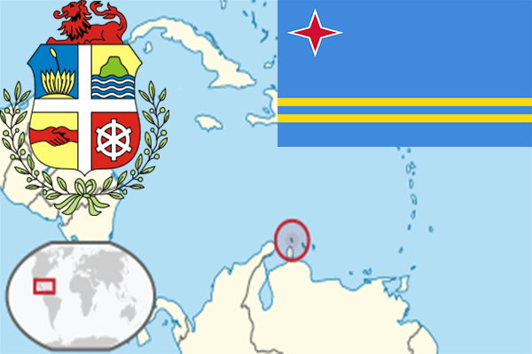

To`liq nomi: Aruba oroli
Region: Jan. Amerikaning shimoliy qismi
Qonunchilik shakli: Konstitutsion monarxiya
Mustaqillik kuni: 1-yanvar 1986-yil Gollandiyaning Antil orollaridan
Poytaxti: Oranestad
Maydoni: 178,91km²
Chegaradosh davlatlari: yo`q
Aholisi: 103 889 (dunyoda 202 -o`rinda ) 2015 -yil roʻyxat
Aholi zichligi: 580,67/km²
Aholining o`rtacha yoshi: 79,4 yil ( 82,8 ayollar, 76 erkaklar)
Rasmiy tili: Gollandcha
Dini: 80,8% katolik, 7,8% protestant, 11,4% boshqa dinlar
Pul birligi: Aruba florini
Telefon prefiksi: +297
Internet domen: .aw
Xalqaro tashkilotlarga a`zoligi: -
Dengiz va okeanlarga chiqishi: Atlantika okeani
YIM: Butun: $ 2,512 milliard, Jon boshiga: $ 28 934 (2007 - yil roʻyxati)
Yirik shaharlari: Oranestad, Sint-Nikolas, Noord